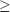
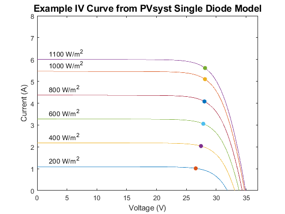
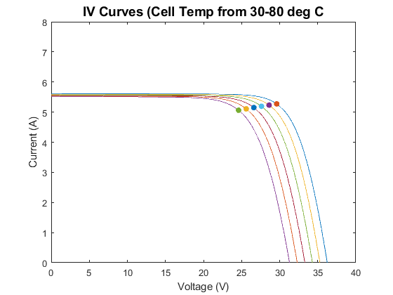

pvl_calcparams_PVsyst
Calculates five parameters to compute IV curves using the PVsyst model.
Contents
Syntax
[IL, I0, Rs, Rsh, nNsVth] = pvl_calcparams_PVsyst(S, Tcell, alpha_isc, ModuleParameters) [IL, I0, Rs, Rsh, nNsVth] = pvl_calcparams_PVsyst(S, Tcell, alpha_isc, ModuleParameters) [IL, I0, Rs, Rsh, nNsVth] = pvl_calcparams_PVsyst(S, Tcell, alpha_isc, ModuleParameters, Sref) [IL, I0, Rs, Rsh, nNsVth] = pvl_calcparams_PVsyst(S, Tcell, alpha_isc, ModuleParameters, Sref, Tref) [IL, I0, Rs, Rsh, nNsVth] = pvl_calcparams_PVsyst(S, Tcell, alpha_isc, ModuleParameters, 'Sref', Sref, 'Tref', Tref)
Description
Applies the PVsyst model [1, 2, 3] to calculate the five parameters for IV curves.
Inputs
- S - The effective irradiance (in W/m^2) absorbed by the module. S must be  0. May be a vector of the same size as Tcell. Due to a division by S in the script, any value equal to 0 will be set to 1E-10.
- Tcell - The average cell temperature of cells within a module in C. Tcell must be -273.15. May be a vector of the same size as S.
- alpha_isc - The short-circuit current temperature coefficient of the module in units of A/C (or A/K).
- ModuleParameters - a struct with parameters describing PV module performance at reference conditions. The ModuleParameters struct must contain (at least) the following fields:
- ModuleParameters.gamma_ref - diode (ideality) factor at reference conditions (unitless).
- ModuleParameters.mugamma - temperature dependence of gamma (1/C).
- ModuleParameters.IL_ref - Light-generated current (or photocurrent) in amperes at reference conditions. IL is referred to as Iphi in some literature.
- ModuleParameters.I0_ref - diode reverse saturation current in amperes at reference conditions.
- ModuleParameters.Rsh_ref - shunt resistance at reference conditions (ohms)
- ModuleParameters.Rsh0 - shunt resistance at zero irradiance (ohms).
- ModuleParameters.Rshexp - exponential factor defining decrease in Rsh with increasing effective irradiance.
- ModuleParameters.Rs_ref - series resistance at reference conditions (ohms).
- ModuleParameters.eG - The energy bandgap at reference temperature (eV), must be >0.
- Sref - Optional reference effective irradiance in W/m^2. If omitted, a value of 1000 W/m^2 is used.
- Tref - Optional reference cell temperature in C. If omitted, a value of 25 C is used.
Output:
- IL - Light-generated current in amperes at irradiance=S and cell temperature=Tcell.
- I0 - Diode saturation curent in amperes at irradiance S and cell temperature Tcell.
- Rs - Series resistance in ohms at irradiance S and cell temperature Tcell.
- Rsh - Shunt resistance in ohms at irradiance S and cell temperature Tcell.
- nNsVth - modified diode (ideality) factor at irradiance S and cell temperature Tcell. nNsVth is the product of the usual diode (ideality) factor gamma, the number of series-connected cells in the module Ns, and the thermal voltage Vth of a cell in the module at a cell temperature of Tcell.
Example 1
IV curves at a range of irradiance values
Ee = [200 400 600 800 1000 1100]; % effective irradiance Levels (W/m^2) for parameter sets Tcell = 45; %deg C % Notional cSi module Module.gamma_ref=1.1; Module.mugamma=-0.0003; Module.IL_ref=5.5; Module.I0_ref=2.2e-9; Module.Rsh_ref=2000; Module.Rsh0=8700; Module.Rshexp=5.5; Module.Rs_ref=0.33; Module.eG=0.95; Module.Ns=60; aIsc=-0.002; [IL, I0, Rs, Rsh, a] = pvl_calcparams_PVsyst(Ee, Tcell, aIsc, Module); NumPoints = 1000; [IVResult] = pvl_singlediode(IL, I0, Rs, Rsh, a, NumPoints); figure for i=1:6 plot(IVResult.V(i,:),IVResult.I(i,:)) hold on scatter(IVResult.Vmp(i),IVResult.Imp(i),'filled') text(2,IVResult.Isc(i)+0.3,[num2str(Ee(i)) ' W/m^2']) end xlabel('Voltage (V)') ylabel('Current (A)') title('Example IV Curve from PVsyst Single Diode Model','FontSize',14) ylim([0 8]) xlim([0 37])
Example 2
IV curves at a range of cell temperature values and at AM = 3
S = 1000; %broadband irradiance Levels for parameter sets Tcell = [30 40 50 60 70 80]; %deg C AMa = 3; % Absolute (pressure corrected) airmass % Bandgap and Bandgap temperature dependence from [2] EgRef = 1.121; %Reference band gap. C = -0.0002677; %Band gap dependence on temperature. % Representative coefficients for estimating M/Mref for Poly-crystalline Si % From Table A.1 in [1]. M = polyval([-0.000126 0.002816 -0.024459 0.086257 0.918093], AMa); Ee = S.*M; [IL, I0, Rs, Rsh, a] = pvl_calcparams_PVsyst(Ee, Tcell, aIsc, Module); NumPoints = 1000; [IVResult] = pvl_singlediode(IL, I0, Rs, Rsh, a, NumPoints); figure for i=1:6 plot(IVResult.V(i,:),IVResult.I(i,:)) hold on scatter(IVResult.Vmp(i),IVResult.Imp(i),'filled') end xlabel('Voltage (V)') ylabel('Current (A)') title('IV Curves (Cell Temp from 30-80 deg C','FontSize',14) ylim([0 8])
References
[1] K. Sauer, T. Roessler, C. W. Hansen, Modeling the Irradiance and Temperature Dependence of Photovoltaic Modules in PVsyst, IEEE Journal of Photovoltaics v5(1), January 2015.
[2] A. Mermoud, PV modules modelling, Presentation at the 2nd PV Performance Modeling Workshop, Santa Clara, CA, May 2013.
[3] A. Mermoud, T. Lejeune, Performance Assessment of a Simulation Model for PV modules of any available technology, 25th European Photovoltaic Solar Energy Conference, Valencia, Spain, Sept. 2010.
See also
Copyright 2015 Sandia National Laboratories